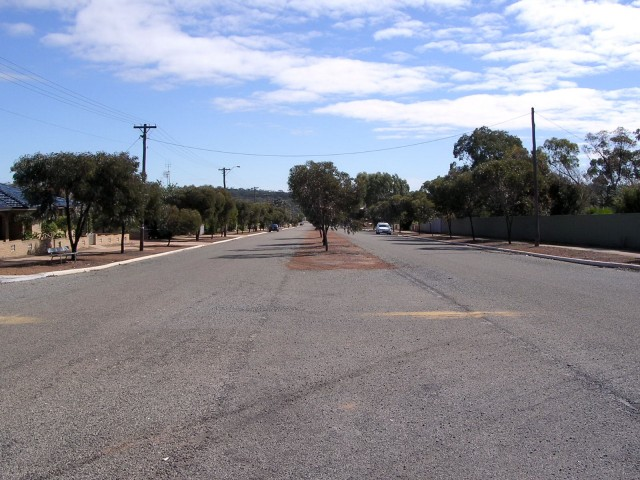
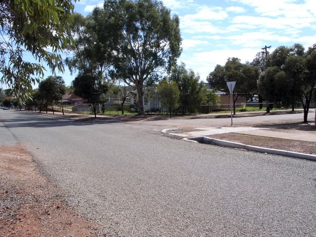
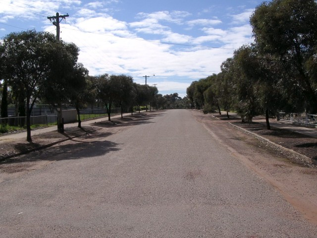
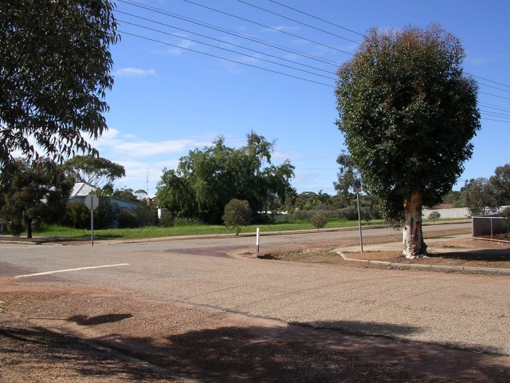
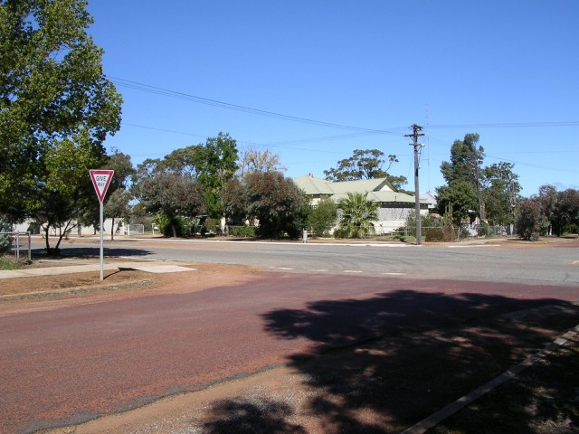

Numbers on the map represent the location where the photographs were taken. Scroll down to view the photographs.
Goomaling - Forward St., James St. and High St. (1949 only)
|| Contents || Railway / Lockyer / Qunilan / Forrest | Forward / James / High (1949) | Forrest / Eaton / Throssell / Railway || Home ||
Numbers on the map represent the location where the photographs were taken. Scroll
down to view the photographs.
Return to racingcircuits.net's Photo Archive Main Index
The photos on this page feature sections of the circuit that were used in 1949 only.

8 - 1949 longer circuit. Hairpin left and back down Forrest Street to
Forward Street.

9 - Turn right into Forward Street.

10 - Forward Street.

11 - Turn right from Forward Street into James Street.

12 - Turn right into High Street from James Street.

13 - Turn left into Forrest Street from High Street.
Photographs and Text ©Neil Fackerell. Reproduced here with kind permission.